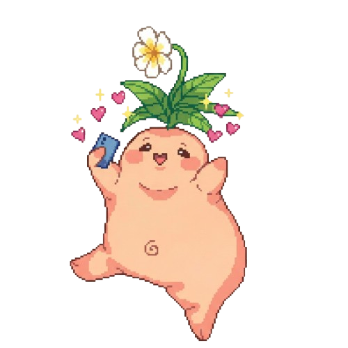
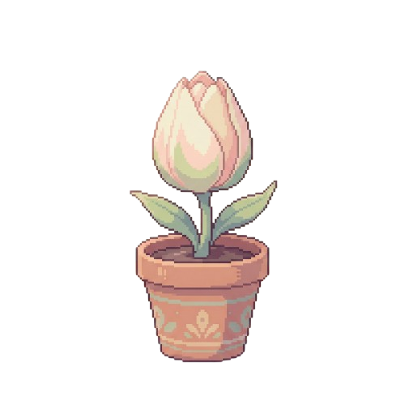
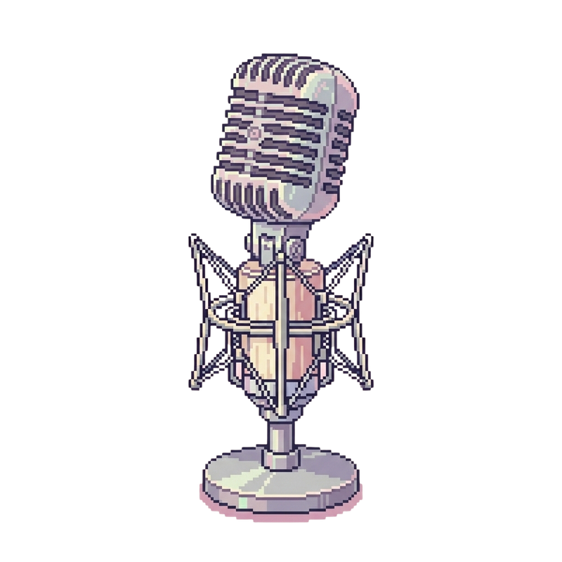
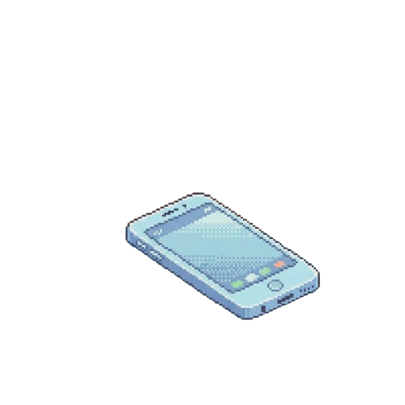

Hay un mensaje para ti
¿Qué mensaje?
Para quienes atraviesan momentos de ideación suicida, la sensación más difícil no siempre es el dolor en sí, sino sentir que nadie está ahí. A menudo, vivimos esperando una notificación que a veces nunca llega. Ante ese vacío, queremos responder a este suceso con un gesto directo, humano y sencillo: "Hay un mensaje para ti".
No se busca solo concienciar sobre la problemática, sino activar una red de apoyo visible y conectada, donde cada notificación, cada palabra compartida y cada gesto demuestre que siempre hay alguien al otro lado. Porque, incluso cuando el silencio pesa, siempre puede llegar un mensaje.
Encuentra apoyo, recursos y esperanza en nuestra comunidad
No estás sol@
BUZÓN
Aquí recibirás los mensajes que te envíen
JARDÍN
Cuantas más mensajes envíes más rápido crecerá tu jardín
PODCAST
Un espacio para hablar del suicidio junto a La Niña Amarilla
INFORMACIÓN
Datos de contacto por si necesitas ayuda profesional